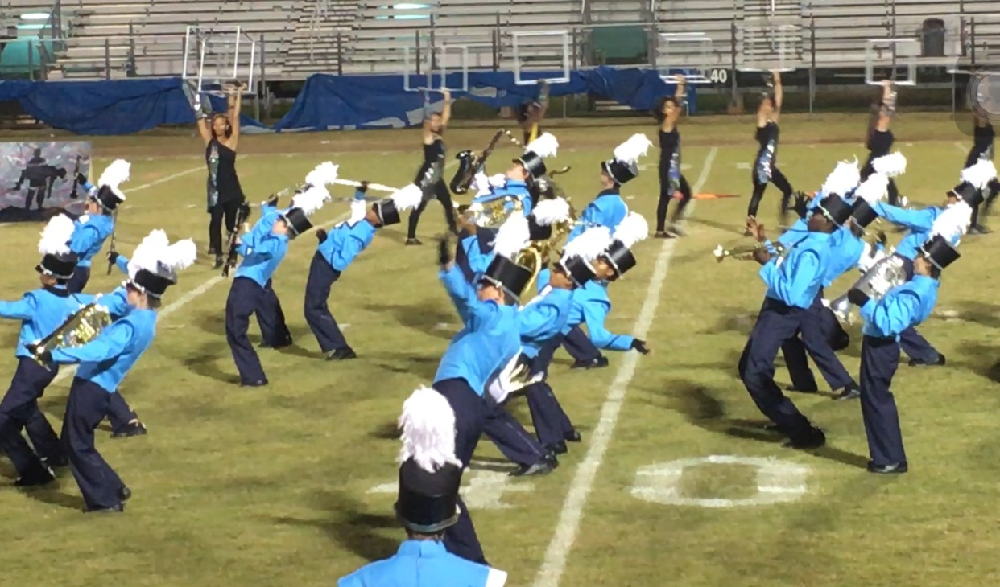

First of all, let us get some stereotypes out of the way. A lot of people assume that a marching band is a group of anti-social nerds, which is definitely not true. We may be a little bit nerdy but we are extremely social and nice to everyone. We do not play at just football games. Football games are definitely not what we do band for. We go to competitions and compete against other bands from all over the state! We spend hundreds of hours learning and perfecting our show! It is not easy remembering where you are supposed to be on the field, how you get there, how many counts you have to get there, and not hitting into other people all while playing music with a good sound.
By Wesley F